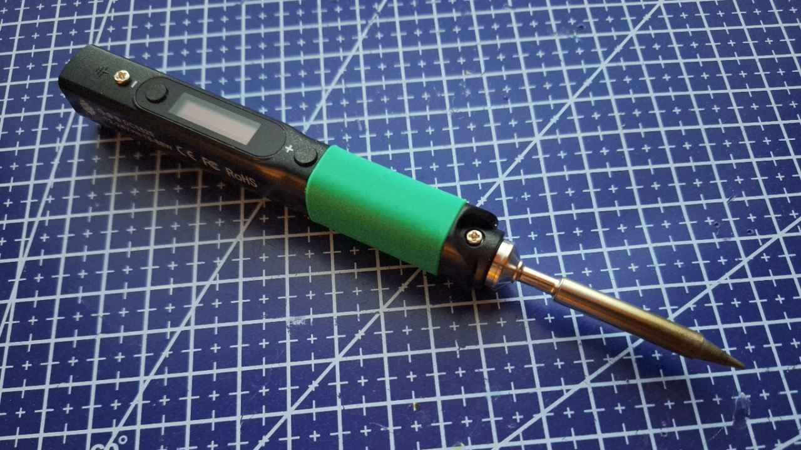
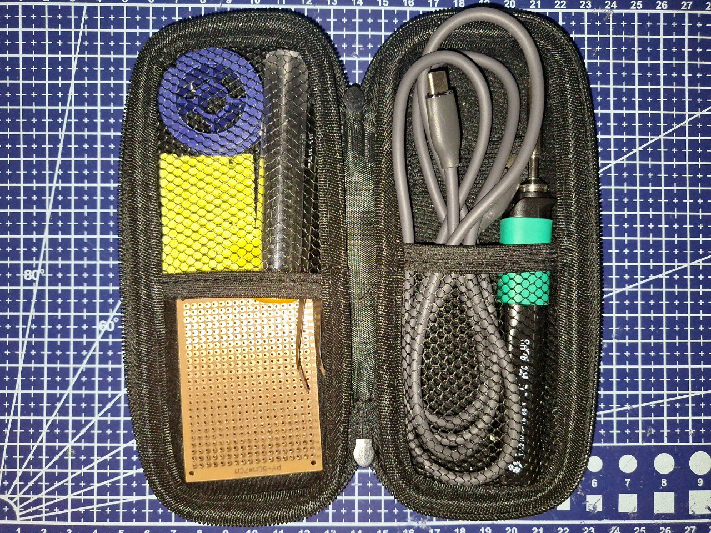

Користуюся цим щастям вже більше двох тижнів, перепаяв і повипаював вже десятки компонентів, тому буду радий поділитися своїм досвідом.
Постараюся торкнуся всіх важливих аспектів, починаючи з оплати + доставки і закінчуючи зручністю у використанні.
Оплачував на офіційному гонконгському сайті PINE64 - доставка зайняла 13 днів, що як на міжнародну доставку дуже швидко. Благо локація дозволила.
Проте! Варто враховувати, що можуть бути проблеми з доставкою в Україну. Наприклад, мій хороший знайомий замовляв станцію PinePower через Meest, і коли посилка доїхала до Польщі, то почалися проблеми з митницею. В результаті, посилка затрималася на більше ніж 2 місяці, і вони вже збиралися її повернути на склад.
На щастя, проблема вирішилася, і все ж таки він зміг її отримати. Він глибше торкнувся цієї проблеми, тому якщо цікаво, то можете почитати тут.
P.S. Спочатку я хотів замовити Pinecil V1 з Алі, але мій той самий хороший знайомий підказав, що там продаються не оригінальні PINE64.
До якості збірки у мене абсолютно ніяких претензій немає, аналогічно до пластику - люфту немає, пластик приємний на дотик.
Жало підходить будь-яке від TS, а кріпиться воно двома гвинтиками, хоча користуватися ви будете тільки одним (верхнім). Що не може не радувати в цьому, так це ціна жал TS на Алі в районі 250-300 гривень.
Гумка, за яку хапаються пальці, на дотик дуже приємна і добре тримає пальці. Паяльник не випадає з рук.
Вага дуже маленька, всього 28 грам (без жала 18 грам).
Єдиний мінус, який я поки що помітив в корпусі - нагрів нижнього гвинтика, що тримає жало. Не смертельно, але іноді можна доторкнутися до нього.
Паяльник працює від 12-24 В при потужності від 18 - 88 Вт (хоча на офіційному сайті вказані більші цифри).
Нагрівання до 300 градусів на 65-ватному БЖ відбувається дуже швидко - буквально за 10 секунд. Особливо хочу звернути увагу на те, що паяльник зможе працювати +- від будь-якого джерела живлення. Наприклад, у мене він запускався від 4.8 В / 2 Вт, хоча грівся дуже повільно. Зазвичай паралельно до 65-ватному БЖ я користуюся павербанком на 9 В / 13 Вт, і при такій напрузі + потужності він розігрівається до 300 градусів приблизно за 30 секунд
Охолоджується теж швидко - з 300 градусів до 100 градусів всього за 2 хвилини.
Температуру паяльник тримає і показує досить стабільно, відхилення знаходиться в діапазоні 0-3 градусів, що дуже добре.
Відкрита прошивка IronOS дає безліч можливостей в налаштуванні та модифікації паяльника. До того ж, на відміну від першої версії, Pinecil V2 отримав підримку Bluetooth, що можна ефективно використовувати в побуті. Наприклад, зробити автоматичне вмикання витяжки щоразу, коли паяльник вмикається.
IronOS підтримує розташування інтерфейсу як для шульги, так і для правші. І до того ж хочу підкрислити підтримку українскої мови!
Ця прошивка інтуїтивно зрозуміла, тому не буду приділяти їй великої уваги, однак якщо цікавить її функціонал, то можете почитати про це тут.

Краще докупити кейс для нього, адже з посилкою прийде тільки сам паяльник, жало, інструкція і власне все, а зберігати його десь треба. До кейсу дуже рекомендую прикупити хороший гнучкий силіконовий провід, бо, як правило, проводи в гумовій оплетці жорсткі, які можуть з легкістю пересувати легкі підключені предмети.
Було б неприємно обпекти руку паяльником, який зрушився через провід, чи не так?
Це найкращий паяльник у категорії ціна-якість на даний момент.
Є прямий конкурент Miniware TS101 за 2600 гривень на Алі, але в порівнянні з Pinecil V2, який я купив за 1750 гривень з урахуванням доставки, він виглядає як огризок, де підтримка ПЗ + корпус гірші, а спільнота - менша.
За весь час експлуатації я жодного разу не відчув труднощів, а також жодного разу не пошкодував про покупку (вже настраждався з дешевими паяльниками).
Тому, якщо будете думати про вибір паяльника, сміливо можу рекомендувати Pinecil V2.
Веселого паяння!